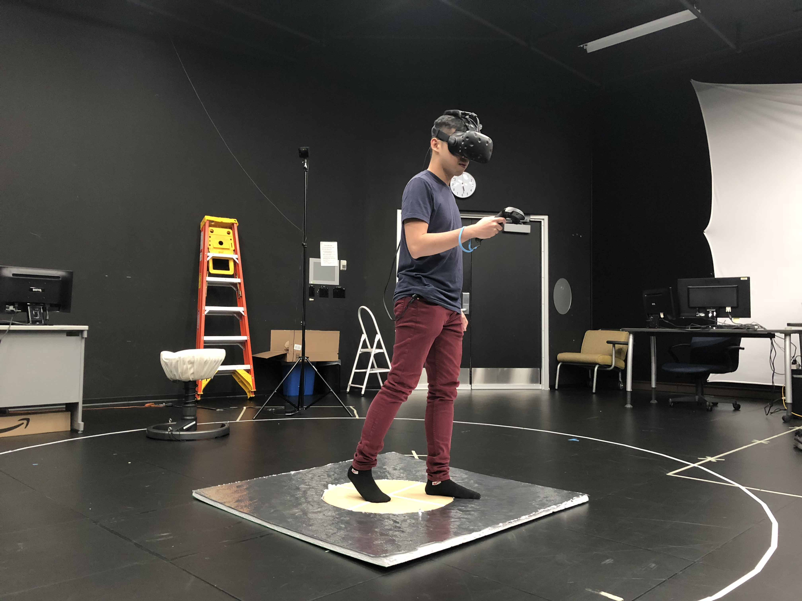

Do We Need Actual Walking for Efficient VR Locomotion?
Walking has always been considered as the gold standard for navigation in Virtual Reality research. Though full rotation is no longer a technical challenge, physical translation is still restricted through limited tracked areas. From a scientific perspective and while rotational information has been shown to be important, the benefit of the translational component is still unclear with mixed results in previous work. To address this gap, we conducted a mixed-method experiment to compare four levels of translational information: none (using the trackpad of the HTC Vive controller to virtually translate), upper-body leaning (sitting on a Swopper chair, leaning the upper-body to locomote), whole-body leaning (standing on a platform called NaviBoard, leaning the whole body or stepping one foot off the center to navigate), and full translational information (physically walking). Results showed that translational information had significant effects on various measures including task performance, task load, and simulator sickness. While participants performed significantly worse when they used a controller with no embodied translational cues, there was no significant difference between the leaning-based interfaces and walking. These results suggested that translational body-based information from a leaning-based interface might provide enough motion cues for efficient locomotion in VR.
Keywords
Spatial Orientation, Virtual Reality, Virtual Locomotion, Experimentation, Human Factors, Performance
NaviBoard
Experiment Introduction
Full Presentation
Publication
Nguyen-Vo, T., Riecke, B. E., Stuerzlinger, W., Pham. D.-M., & Kruijff, E. (2019). NaviBoard and NaviChair: Limited Translation Combined with Full Rotation for Efficient Virtual Locomotion. Journal article published at IEEE Transactions on Visualization and Computer Graphics (TVCG). https://doi.org/10.1109/TVCG.2019.2935730
Nguyen-Vo, T., Riecke, B. E., Stuerzlinger, W., Pham, D.-M., & Kruijff, E. (2018). Do We Need Actual Walking in VR? Leaning with Actual Rotation Might Suffice for Efficient Locomotion. Poster presented at Spatial Cognition 2018.